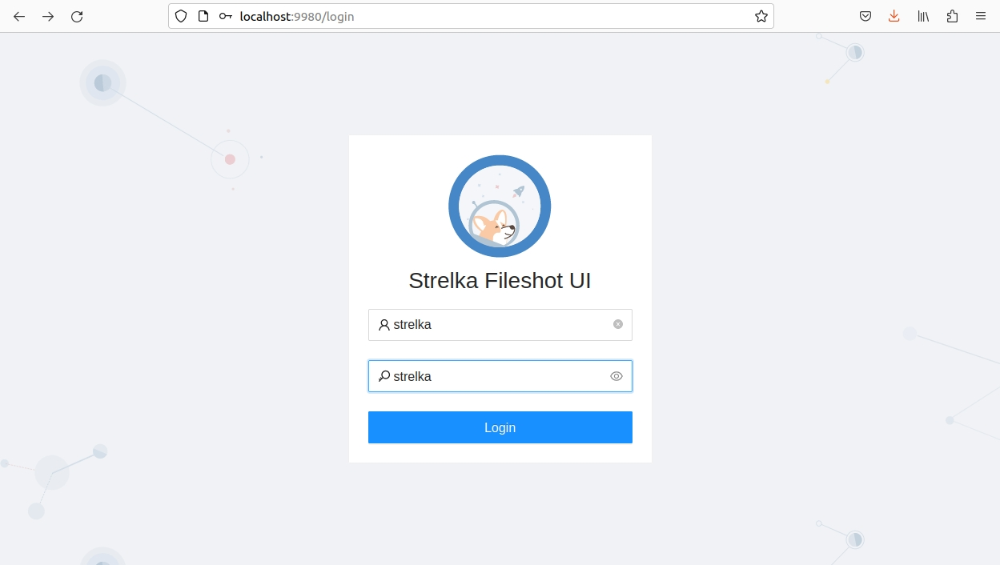
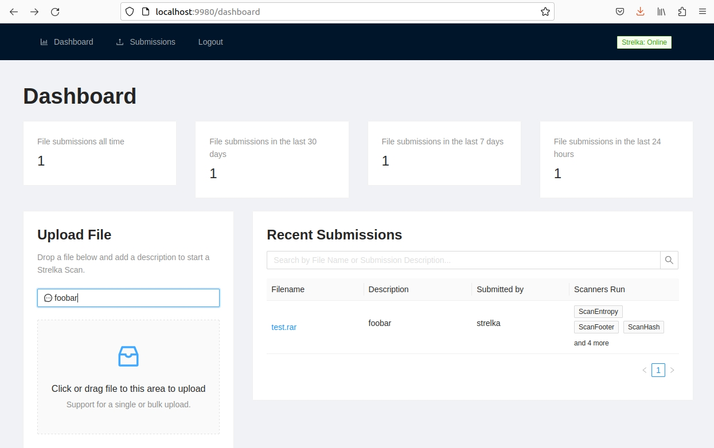

Quickstart
By default, Strelka is configured to use a minimal "quickstart" deployment that allows users to test the system. This configuration is not recommended for production deployments, but may suffice for environments with very low file volume (<50k files per day).
Using two Terminal windows, do the following:
Quickstart Steps¶
Step 1: Install Prerequisites¶
# Ubuntu 23.04
sudo apt install -y wget git docker docker-compose golang jq && \
sudo usermod -aG docker $USER && \
newgrp docker
Step 2: Download Strelka¶
Step 3: Download and Install Preferred YARA Rules (Optional)¶
rm configs/python/backend/yara/rules.yara && \
git clone https://github.com/Yara-Rules/rules.git configs/python/backend/yara/rules/ && \
echo 'include "./rules/index.yar"' > configs/python/backend/yara/rules.yara
Step 4a: Pull Precompiled Images and Start Strelka¶
Strelka UI: Skip Go Build
You can skip the go build process and use the Strelka UI at http://0.0.0.0:9980 to analyze files.
docker-compose -f build/docker-compose-no-build.yaml up -d && \
go build github.com/target/strelka/src/go/cmd/strelka-oneshot
Step 4b: Build and Start Strelka¶
Strelka UI: Skip Go Build
You can skip the go build process and use the Strelka UI at http://0.0.0.0:9980 to analyze files.
docker-compose -f build/docker-compose.yaml build && \
docker-compose -f build/docker-compose.yaml up -d && \
go build github.com/target/strelka/src/go/cmd/strelka-oneshot
Step 5: Prepare a File to Analyze¶
Use any malware sample, or other file you'd like Strelka to analyze.
wget https://github.com/ytisf/theZoo/raw/master/malware/Binaries/Win32.Emotet/Win32.Emotet.zip -P samples/
Step 6: Analyze the File with Strelka Using the Dockerized Oneshot¶
What's happening here?¶
- Strelka determined that the submitted file was an encrypted ZIP (See: [backend.yaml])
ScanEncryptedZipused a dictionary to crack the ZIP file password, and extract the compressed file- The extracted file was sent back into the Strelka pipeline by the scanner, and Strelka determined that the extracted file was an EXE
ScanPedissected the EXE file and added useful metadata to the outputScanYaraanalyzed the EXE file, using the provided rules, and added numerous matches to the output, some indicating the file might be malicious
The following output has been edited for brevity.
{
"file": {
"depth": 0,
"flavors": {
"mime": ["application/zip"],
"yara": ["encrypted_zip", "zip_file"]
},
"scanners": [
"ScanEncryptedZip",
"ScanEntropy",
"ScanFooter",
"ScanHash",
"ScanHeader",
"ScanYara",
"ScanZip"
]
},
"scan": {
"encrypted_zip": {
"cracked_password": "infected",
"elapsed": 0.114269,
"total": {"extracted": 1, "files": 1}
}
}
}
{
"file": {
"depth": 1,
"flavors": {
"mime": ["application/x-dosexec"],
"yara": ["mz_file"]
},
"name": "29D6161522C7F7F21B35401907C702BDDB05ED47.bin",
"scanners": [
"ScanEntropy",
"ScanFooter",
"ScanHash",
"ScanHeader",
"ScanPe",
"ScanYara"
]
},
"scan": {
"pe": {
"address_of_entry_point": 5168,
"base_of_code": 4096,
"base_of_data": 32768,
"checksum": 47465,
"compile_time": "2015-03-31T08:53:51",
"elapsed": 0.013076,
"file_alignment": 4096,
"file_info": {
"company_name": "In CSS3",
"file_description": "Note: In CSS3, the text-decoration property is a shorthand property for text-decoration-line, text-decoration-color, and text-decoration-style, but this is currently.",
"file_version": "1.00.0065",
"fixed": {"operating_systems": ["WINDOWS32"]},
"internal_name": "Callstb",
"original_filename": "NOFAstb.exe",
"product_name": "Goodreads",
"product_version": "1.00.0065",
"var": {"character_set": "Unicode", "language": "U.S. English"}
}
},
"yara": {
"elapsed": 0.068918,
"matches": [
"SEH__vba",
"SEH_Init",
"Big_Numbers1",
"IsPE32",
"IsWindowsGUI",
"HasOverlay",
"HasRichSignature",
"Microsoft_Visual_Basic_v50v60",
"Microsoft_Visual_Basic_v50",
"Microsoft_Visual_Basic_v50_v60",
"Microsoft_Visual_Basic_v50_additional",
"Microsoft_Visual_Basic_v50v60_additional"
],
"tags": [
"AntiDebug",
"SEH",
"Tactic_DefensiveEvasion",
"Technique_AntiDebugging",
"SubTechnique_SEH",
"PECheck",
"PEiD"
]
}
}
}
Fileshot UI¶
Strelka's UI is available when you build the provided containers. This web interface allows you to upload files to Strelka and capture the events, which are stored locally.
Navigate to http://localhost:9980/ and use the login strelka/strelka.

